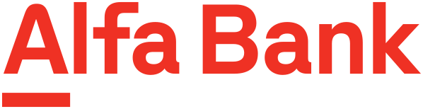

About me
Product designer with 14 years of experience, from agencies and startups to market leaders — Alfa‑Bank, MAPS.ME, BelkaCar. I design architecture and work on product tasks every day, help shape features and see solutions through to implementation. In recent years I have led design teams and built processes around design. Incomplete briefs don’t scare me: I find the data myself, run interviews and tests, and validate hypotheses through MVPs.

What I do: product design of banking services at one of Russia’s largest private banks — from research and user flows to mockups in the bank’s design system and support during development.
What I did: set up the design process and rebuilt the key revenue flows of a betting company’s mobile app: merged registration and identity verification into one step, moved the platforms to a single UI, designed deposits and modals for every case. Worked with legacy and stakeholders, mentored designers.
Results: conversion to completed registration +48%, to first deposit +44%; registration takes under 2 minutes instead of 3+.
What I did: improved the experience of a big data platform on drug development for pharma analysts and investors. Interviewed 12 analysts, created a design system, redesigned charts, tables, search, favorites, collections and alerts.
Results: uninterrupted work time grew from 27 to 41 minutes, analysts find the right metric 3 times faster, SUS rose from 52 to 81, empty search results — 9% instead of 38%. After the redesign, license sales grew by 27.5%.
What I did: brought five real estate services into one ecosystem on iOS and Android: home search, mortgage, deal and renovation. Built the end-to-end user journey and communication model, designed about 100 search screens, tested hypotheses and planned the roadmap.
Results: MVP in 4 months, mortgage form 40% shorter, retention +27%, MVP scope 35% smaller; 36,400+ MAU, 4.78 rating in the App Store.
What I did: led the design of Parity, a crypto service inside MAPS.ME — secure storage and real-time money transfers worldwide. Created the brand from scratch, researched competitors and the market, launched the website and apps.
Results: app rating 4.7 in the App Store and 4.4 in Google Play.
What I did: redesigned the website and apps of the second-largest carsharing service based on support feedback and UX test results, maintained documentation for development.
Results: rating 4.6 in the App Store and 4.0 in Google Play.
Revo Technologies — installment flows on partner websites, from choosing a product to payment; Hyperboloid Agency — research-based strategy and design of client products; Liga Stavok — designed the mobile app of Russia’s No. 1 bookmaker; LEXION development — designed the website of a property developer